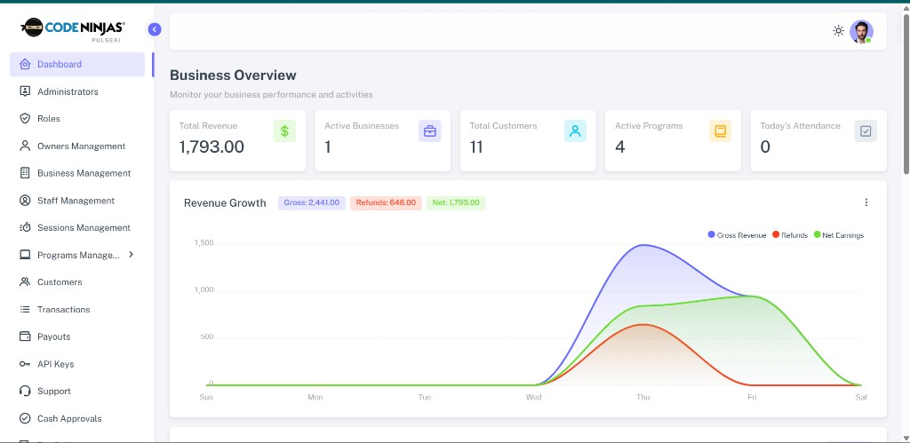
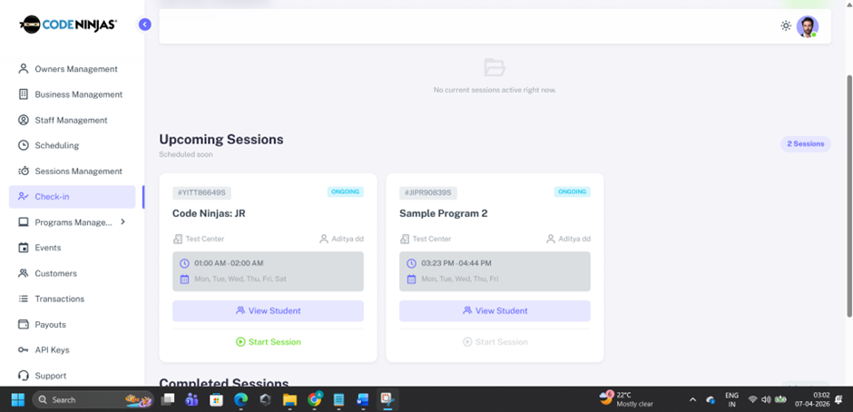
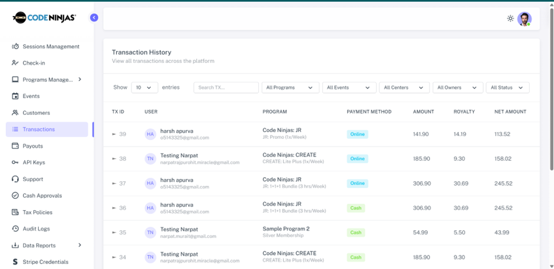
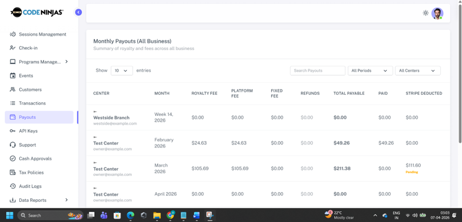

Operational chaos
Rosters, programs, and capacity float in documents while the floor runs on tribal knowledge—harder to scale classes, camps, or appointments without mistakes or double bookings.
BMS + AI · Class-based businesses
Built for class-based operators who need one system for memberships, schedules, payments, and attendance—not a generic AI tool.
BMS + AI for revenue, operations, and retention in one licensed product.
You run memberships, schedules, and money across locations—we give you Admin, Owner, Staff, and customer apps, a real ledger, and workflows built for how facilities actually earn and operate.
Or send details with the contact form →
Vertical SaaS · licensed rollout · your team trained on live KramaAI BMS.

“We stopped reconciling three spreadsheets before every board update—everything funnels into KramaAI for programs and money.”
“Finance finally sees payouts and royalties in the same place managers run schedules. That alone changed how fast we close the month.”
Vertical SaaS: KramaAI BMS is purpose-built for gyms, kids centers, studios, and spas that sell memberships, classes, and packages—so revenue, scheduling, attendance, and payouts stay tied together instead of scattered across generic tools.
Start with the problem we solve See live product screenshots Full capability map
Problem
If you run a gym, kids center, studio, or spa with more than one system of record, you are not alone: scheduling lives in one place, payments in another, and “what we earned” becomes a weekly reconstruction project. That is the gap buyers close when they move to a real BMS.
Rosters, programs, and capacity float in documents while the floor runs on tribal knowledge—harder to scale classes, camps, or appointments without mistakes or double bookings.
Cash, card, and package purchases get reconciled in spreadsheets. End-of-day and month-end depend on specific people—and errors show up as “mystery shrink,” not as a fixable workflow.
Missed renewals, inconsistent discounts, and untracked refunds erode margin. Without a structured transaction history per customer and program, you cannot see where money quietly walks out the door.
Attendance and engagement signals sit apart from billing—so proactive saves for at‑risk members rarely happen on time.
Owners cannot answer simple questions—“What did we collect this week by center and method?”—without exports and pivot tables.
Customers, memberships, events, and fees live in different tabs and tools. There is no one commercial system connecting operations, finance, tax, and payouts—until you deploy a BMS built for your vertical.
Solution
You are buying a deployed business management system with AI where it speeds revenue and operations work—not a disconnected “insights” widget. Programs, memberships, staff, customers, tax-aware transactions, and payouts connect in one owner-grade application across Admin, Owner, Staff, and customer experiences.
Leadership sees KPIs tied to real enrollments and payments—so growth conversations start from live data, not from reconstructed spreadsheets.
Built for class-based and appointment-style businesses: memberships, events, schedules, capacity, instructors, and check-in–driven attendance in one flow.
Protect earned revenue: transactions, cash approvals, platform commission, owner earnings, tax policies, Stripe online payments, and payout status in one financial layer.
Reduce manual follow-up: audit trails, exports, API keys for the rest of your stack, and ticketing so customers and operators stay aligned.
Outcomes
Each point maps to screens and modules you can validate in a live walkthrough—not generic “AI” promises.
Live demo · Real product UI
Proof you are evaluating software—not a concept deck. Four approved captures: business overview (revenue & growth), check-in & sessions (floor operations), transaction history (ledger), monthly payouts (multi-center money). Open any image full screen.



Use-case driven map
Read this as “what my front desk, managers, and finance get”—not a buzzword list. Screenshots show the same UI your team will use after rollout.
Three operational consoles plus the customer app—each with tailored dashboards and permissions.
Finance buys the BMS here
Buyers tell us finance approval is faster when revenue is not “another export.” KramaAI BMS treats every transaction as part of a structured ledger so leadership sees how cash, online payments, fees, and royalties roll into payouts—without bolting on a second system.
Transaction histories, status changes, approvals, and tax policies are stored in structured BMS records. When auditors, investors, or partners ask how a number was calculated, your team answers from KramaAI BMS— not from a fragile spreadsheet.
Security & control
Define clear boundaries between owners, finance, managers, and front‑desk staff. Sensitive modules such as payouts, royalties, and tax policies are only visible to authorized roles.
Draft, Active, Inactive, and Published states keep configuration work separate from live operations, so incomplete setups never reach customers.
Centralized records reduce reliance on local spreadsheets and ad‑hoc documents. Owners gain a single source of truth to support internal and external reviews.
Who buys KramaAI BMS
We speak buyer language for gyms and fitness studios, kids centers and enrichment chains, wellness and spas with packages, and multi-location operators that outgrew duct-tape stacks.
Memberships, class packs, trials, and recurring billing—with schedules and attendance tied to what members actually use.
Children, guardians, camps, and term programs in one place so enrollment, payments, and check-in stay aligned when parents pay and kids attend.
Appointments, services, and franchise-style economics: centralized visibility into programs, royalties, and payouts without losing local execution.
Why purchase this BMS
For a buyer-level view versus category platforms, jump to Compare vs MyStudio, Pike13 & iClassPro.
Compare
Incumbent platforms are strong at calendars and memberships. Buyers still switch when finance, multi-center payouts, and a single operational ledger need to live in one vertical BMS—with room for AI on revenue and operations work. Ratings below summarize typical evaluation conversations; confirm fit on your demo.
| Capability | KramaAI | MyStudio | Pike13 | iClassPro |
|---|---|---|---|---|
| Positioning | Vertical BMS + AI for revenue, operations, retention | Studio & class business management | Membership & commerce for fitness businesses | Class-based child activity center software |
| Ideal buyer moment | Licensed product; multi-role rollout with training | Studios standardizing on one vendor stack | Growing fitness brands needing strong billing | Kids programs needing deep class & family tools |
| Programs, scheduling, attendance | Core product—tied to live screenshots | Strong class experience | Strong scheduling & commerce | Deep enrollment & family workflows |
| Payments → payouts & royalties | Designed as one ledger (cash + online, fees, payouts) | Varies by package—often paired integrations | Commerce-first financial flows | Billing tuned to youth activity centers |
| Multi-location / franchise clarity | Owner + admin models built for network visibility | Multi-location supported for growing brands | Multi-site fitness operations | Franchise & multi-branch common in category |
| AI for revenue & operations | Positioned as layered on your BMS data—not generic chat | Traditional product analytics / partner ecosystem | Analytics & reporting focus | Reporting & operational tooling focus |
| Reason teams add KramaAI | When “another export to finance” is the bottleneck, KramaAI is the path to one system of record across roles. Schedule a call if you are on MyStudio, Pike13, or iClassPro today—we map a migration story to your centers. | |||
Commercial packages
KramaAI BMS is sold as a licensed product with implementation and training. Pick the tier that matches your footprint; our sales team finalizes modules, center count, and support in a single quote.
For single‑location businesses formalizing operations.
For multi‑center operators scaling revenue and governance.
For franchise networks and large organizations.
Schedule
Choose a time on our calendar (Calendly, Cal.com, or similar). If you have not connected a scheduler yet, use the contact form below—we still capture preferred date and time there.
Set SCHEDULE_CALL_URL in script.js to your booking link. Deployed sites can use a short path:
/schedule.html (or /schedule on Vercel with the included rewrite).
Tell us how many centers you run, whether you are on MyStudio, Pike13, iClassPro, or spreadsheets, and what “go-live” looks like. We will walk KramaAI BMS against your operating model and return a clear proposal—license, rollout, and training.
Email alerts use Web3Forms. Set your access key in
script.js (WEB3FORMS_ACCESS_KEY) so submissions reach your inbox.
FAQ
Every payment—cash or online—is recorded in the BMS as a transaction linked to a customer, program or event, payment method, and status. Leadership can filter and report by date range, center, method, and status for one reliable revenue picture.
Yes. KramaAI BMS is sold for multi-location control. You can view data per center or across the network depending on role and permissions.
Cash entries flow through a dedicated approval workflow. Designated approvers review and confirm or reject submissions before they are treated as final, creating a clear record of validations.
Yes. Tax policies are configured in the BMS with names, percentages, activation dates, and statuses and are applied consistently to eligible programs, memberships, and events.
KramaAI BMS includes dedicated modules for royalty and platform fee tracking, monthly statements, and payout records—core reasons franchise and revenue-share buyers choose this product.